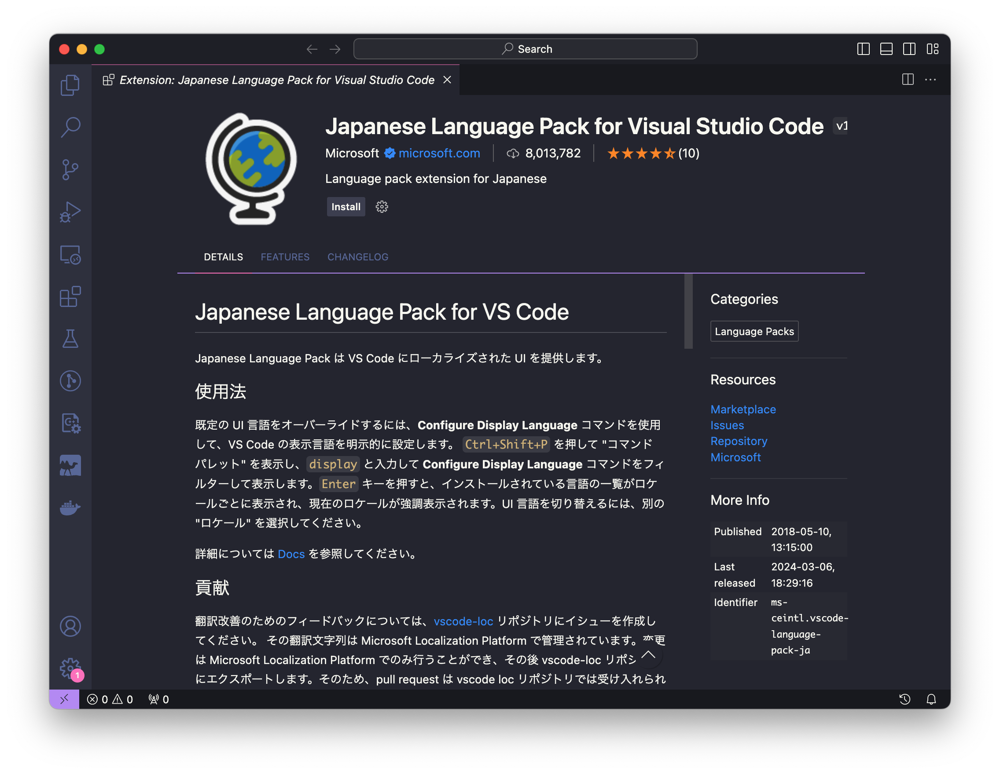
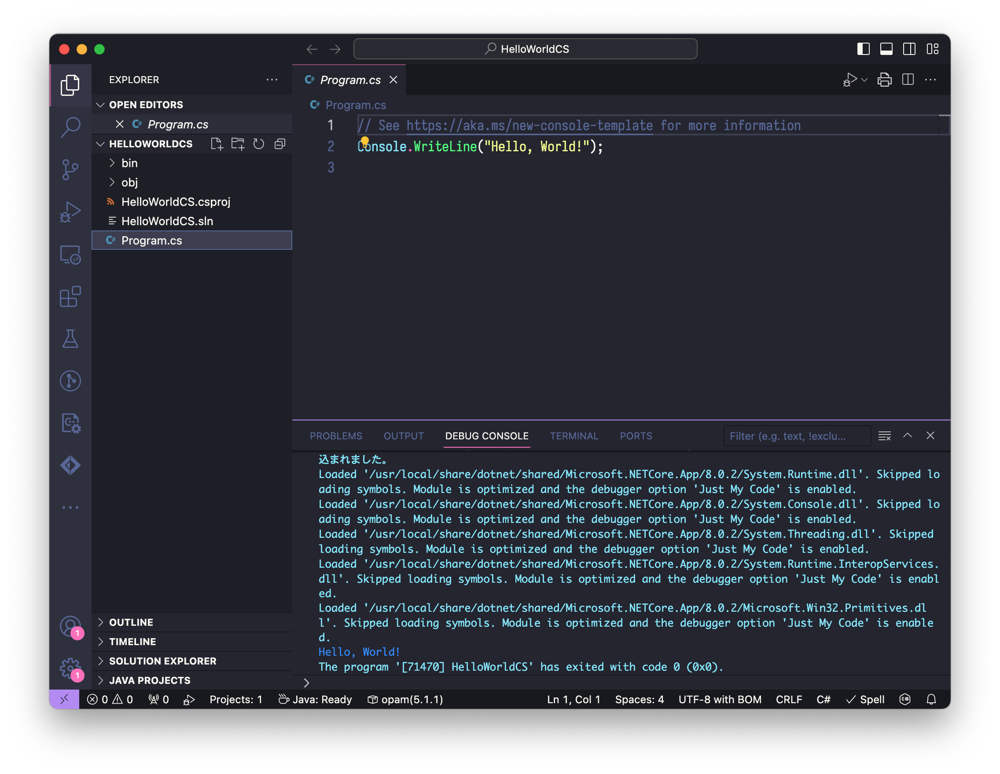

Caution
2024年8月一杯でVisual Studio for Macの提供が廃止されることとなった．それにともない，今年はVisual Studio Code上でC# Dev KitおよびIonide for F#を用いた環境構築法を紹介することとする．Visual Studio を使いたい人は2023年度の環境構築法を参照されたし．
まずは，.NET SDKのインストールを行い，その後Visual Studio Code (VSCode) のインストール・設定を行う．自分の好きなエディタ（viやEmacs等）を使用したい人は後者はしなくてもよい．
なお，このページで紹介している方法ではF#演習のための環境構築にもなっている．C#演習の第5週・第6週目の課題を進めるにはさらなる準備（別ページ）が必要である（こちらはC#演習分のみ）．
（本ページに掲載されているスクリーンショットは，マイクロソフトの許諾を得て使用しています．）
.NET SDKのインストール
インストール
.NET SDKのダウンロードページより，software development kit (SDK)をダウンロードする．2025年度は
.NET 8.0のものを使用することとする．- Windowsの人はWindows版のSDKをダウンロードする．
- Mac版についてはいわゆるintel MacとAppleシリコン（M1やM2）のMacではダウンロードすべきものが違うので注意．前者はx64版を後者はArm64版をダウンロードしよう．
ダウンロードしたインストーラを実行し，指示に従ってインストールを完了する．
- Windows版なら
dotnet-sdk-8.0.407-win-x64.exeみたいな名前 - Macのx64版なら
dotnet-sdk-8.0.407-osx-x64.pkg/dotnet-sdk-8.0.407-osx-arm64.pkgみたいな名前
- Windows版なら
ターミナル（WindowsだとPowerShellか「コマンド プロンプト」，MacだとTerminal.appやiTerm.app）を開き，以下を実行する．
dotnet --list-sdks以下は私の環境における出力だが，このようにダウンロードしたSDK（上の
8.0.407）が表示されたらばOK．6.0.400 [/usr/local/share/dotnet/sdk] 6.0.407 [/usr/local/share/dotnet/sdk] 6.0.408 [/usr/local/share/dotnet/sdk] 6.0.410 [/usr/local/share/dotnet/sdk] 6.0.419 [/usr/local/share/dotnet/sdk] 7.0.202 [/usr/local/share/dotnet/sdk] 7.0.302 [/usr/local/share/dotnet/sdk] 7.0.304 [/usr/local/share/dotnet/sdk] 7.0.313 [/usr/local/share/dotnet/sdk] 8.0.200 [/usr/local/share/dotnet/sdk] 8.0.407 [/usr/local/share/dotnet/sdk]
動作確認
（動作確認は以下のVSCodeのインストール・設定後にも行うので，この時点では飛ばしてもよい）
適当なフォルダに移動して以下を実行する．
dotnet new console -o HelloWorldCSHelloWorldCSというフォルダができているので，そこに移動する．cd HelloWorldCS中身を
lsで確認してみよう．たとえば，Macだと以下のように表示される（Windowsだとlsはdirの別名なので，表示は多少異なる）．HelloWorldCS.csproj Program.cs obj/プログラムを書くには
Program.csを変更すればよい．現時点ではProgram.csの中身は以下の通りである（cat Program.csを実行するなどすると見られる）．// See https://aka.ms/new-console-template for more information Console.WriteLine("Hello, World!");以下のコマンドを実行してビルドする．
dotnet build以下を実行してビルドしたプログラムを実行する．
dotnet runすると，
"Hello, World!"が表示されるのが確認できるはずだ．F#でも同様であることを確認しておこう．
まず，今
HelloWorldCSの中にいるのであれば，その外に移動する．そして，上記において，
dotnet newを実行する場面で，dotnet new console -o HelloWorldCSの代わりにdotnet new console -lang "F#" -o HelloWorldFSとする．また，このコマンドだとHelloWorldCSではなくHelloWorldFSというフォルダが作成される．
Visual Studio Code (VSCode) のインストール・設定
インストール・設定
https://code.visualstudio.com/からインストーラをダウンロードする．
ダウンロードしたインストーラを実行し，指示に従いインストールする．
お好みでJapanese Language Pack for Visual Studio Codeをインストールし，UIを日本語にする．
リンク先のウェブページの「Install」ボタンを押すと，「VSCodeで開きますか」旨の質問が表示されるのでそうする旨の選択する．すると，VSCode内で当該拡張機能のページが表示されるので，そこの"Install"ボタンを選択する．
 あるいは， VSCode上で拡張機能の検索画面からインストールする．左下の歯車アイコンをクリックし"Extensions"を選択する，かWindowsだとControl + Shift + X，MacだとCommand + Shift + Xを押す．するとサイドバーが"EXTENSIONS"に切り替わる．サイドバー上部の検索欄から"Japanese"で検索すると"Japanese Language Pack for Visual Studio Code"が検索結果に現れると思うのでその"install"をクリックする．
Note
一番左のアイコンが並んでいる部分はアクティビティバーであってサイドバーではない．上のスクリーンショットでは表示されていないが，サイドバーはその隣の領域である．
しばらくするとインストールが完了し，VSCodeの再起動が求められるので指示に従う．
C# Dev Kitをインストールする．上と同様にリンク先のウェブページからインストールするか，左下の歯車アイコンをクリックし「拡張機能」を選択し，拡張機能サイドバーより検索してインストールする（"C#"で検索すれば見つかるはず）．
- なお，ライセンスはVisual Studioと同様である．本演習の範囲（学術目的の使用は無償なので）では気にすることはないが，商用のソフトウェアを作成する場合は有償ライセンスが必要となる場合がある．詳しくは公式FAQを参照．
Ionide for F#をインストールする．やり方は上と同様．
（オプショナル & Macの場合）
codeコマンドをインストールする．コマンドパレット （Command + Shift + Pを押すと出てくる）から，シェル コマンド: PATH 内に 'code' コマンドをインストールします Shell Command: Install 'code' command in PATHを選択し（当該コマンドは"Shell C"ぐらいまで入力した出てくるはず），
codeコマンドをインストールする．これによりターミナルからcode FOLDERとすることでVSCodeを起動できるようになる．Note
公式ドキュメントによると，
Restart the terminal for the new
$PATHvalue to take effect.You can now type 'code .' in any folder to start editing files in that folder.
とあるが，私の環境だと
Shell Command: Install 'code' command in PATHをすることで，/usr/local/bin下に実行形式ファイルcodeがインストールされた（そして記述に反して環境変数PATHは変更されなかった）ので，もともと/usr/local/binがパスに通っているのならばターミナルの再起動は必要がないかもしれない（2023年3月27日時点）．
動作確認
以下を行う．
Note
いずれの方法でも，フォルダを開くタイミングで「このフォルダー内のファイルの作成者を信頼しますか？」なるダイアログで出てくるかもしれない．その場合は，今回については自分が用意したファイルであるはずなので「はい，…」を選択する．
C#編1（プロジェクトの作成にコマンドライン使用；本演習ではオススメ）
ターミナルでプロジェクトを作成し，それを開く．具体的には以下の方法1と方法2のいずれかを行う．いずれの場合もC# Dev Kitがプロジェクトを認識した時点で，開いたフォルダ直下に
フォルダ名.slnなるファイルが作成されるはず．Note
ここでいうプロジェクトとは一つの実行形式やライブラリを作成するためのコード等を全てまとめたものである．プロジェクトの設定は
.csprojファイルに記述されている．複数のプロジェクトをまとめたものはソリューションと呼ばれ，.slnファイルにその情報が記述されている（参考：What are solutions and projects in Visual Studio?）Caution
プロジェクトはネストさせない．つまり，
.csprojが含まれているフォルダ以下に別の.csprojが含まれているフォルダを作らない．方法1：ターミナルでプロジェクトを作成してからVSCodeでそのフォルダを開く
ターミナル上で，上に書いたように
dotnet new console -o HelloWorldCSで適当なプロジェクト（ここではHelloWorldCS）を作成し，その後code HelloWorldCSでVSCodeを開く（Macの場合はcodeコマンドのインストールが必要）．少し待つとC# Dev Kitがプロジェクトを認識する（「エクスプローラー」サイドバーに「ソリューション エクスプローラー」が増える）．方法2：VSCodeでフォルダを開いてからVSCode内ターミナルでプロジェクトを作成する
VSCodeで作成したいプロジェクトと同名のフォルダ（
HelloWorldCSとする）を開く（Windowsでは「ファイルを開く」ではなく「フォルダーを開く」から開く）．メニューの「表示」→「ターミナル」よりターミナルを起動・表示する．
ターミナルで
dotnet new console -o .を実行し開いたフォルダと同名のプロジェクトを作成する．

エクスプローラ」サイドバーより
.csファイルを選択して少し待つと，C# Dev Kitによりプロジェクトが認識される（同サイドバーに「SOLUTION EXPLORER」が増える）．ターミナルから
dotnet runを実行してもよいが，ここでは別の方法を紹介する．Program.csを左のエクスプローラーから選択して開き，エディタパネル右上（左にあるものではない）の「再生ボタンの右下に虫がついたアイコン」をクリックする．このボタンは.csファイルに関連するプロジェクトをデバッグ実行する（右側の ﹀ から通常の実行に切り替えられる）．
しばらくすると，デバッグコンソールにデバッグメッセージとともに，プログラムの出力
Hello, World!が表示される．最初の実行では「実行とデバッグ」にサイドバーが切り替わるかもしれないが，アクティビティーバー（一番左にあるアイコンが並んでいるバー）の一番上のアイコン（マウスをホバーすると「エクスプローラー」と出るもの）を選択すると戻すことができる．メニューの「表示」→「エクスプローラー」を選択したのでもよい．

Note
「実行とデバッグ」サイドバーの「実行とデバッグ」からでも実行可能である．初回は「デバッガーの選択」や「起動構成の選択」等について聞かれるので，それぞれ「C#」およびさっき作成したプロジェクト名を回答する．ショートカットキー
F5（デバッグの開始）およびCtrl + F5（デバッグなしで実行）も活用するとよい．また，ターミナルから
dotnet runを実行するのでもよい．
C#編2（プロジェクト作成にC# Dev Kitの機能を利用）
次のいずれかを行う．
VSCodeを起動し，どのフォルダも開いていない状態にて「エクスプローラー」サイドバー下部「.NET プロジェクトを作成」をクリックする．
あるいは「開く」から適当なフォルダを開き，コマンドパレット（WindowsはControl + Shift + P，MacはCommand + Shift + P）を起動し，
.NET: 新しいプロジェクト... .NET: New Project...を選択する．非常に多くのコマンドがリストされるが，当該コマンドは
.NET: Nのあたりまでタイプすると出てくるはず．
「コンソール アプリ」を選択する．
選択後の手順はステップは最初のステップにおける選択およびWindows/Macで少し異なる
- Windowsで「.NET プロジェクトを作成」からプロジェクトを作成しようとした場合：「プロジェクトの場所」というファイル選択ダイアログが出てくるので，プロジェクトを置くフォルダを選択する．次にプロジェクト名を聞かれるので適当に選択する．デフォルトのままでもよい．
- プロジェクトをコマンドパレットから作成しようとした場合，あるいはMac：その後プロジェクト名を聞かれるので適当に選択する．デフォルトのままでもよい．次に，どのフォルダの下に作成するかを聞かれるので適当に選択する．フォルダを開いてからコマンドパレットからプロジェクト作成を行った場合は，デフォルトではそのフォルダの直下になっている．
ターミナル（VSCodeのものでもよい）から
dotnet runで実行してもよいし，「C#編1」に書いたように右上の「再生ボタンの右下に虫がついたアイコン」で実行してもよい．
F#編
ターミナルでプロジェクトを作成し，それを開く．C#編1（プロジェクトの作成にコマンドライン使用；本演習ではオススメ）とほぼ同様の方法で
dotnet new consoleコマンドに-lang "F#"というオプションを渡すだけなので，詳細は割愛．（オプショナル）サイドバーをIonideのものに切り替える．アクティビティーバー（一番左にあるアイコンが並んでいるバー）からIonideのアイコン（マウスをホバーすると「F#」と出るもの）を選択することで切り替えられる．なお元にもどすには，アクティビティーバーの一番上のアイコン（マウスをホバーすると「エクスプローラー」と出るもの）を選択すればよい．

ターミナルから
dotnet runで実行する．Ionideのサイドバーの上部の実行ボタンからも実行できる…はずだが，Windows環境だとサイドバー上部の実行ボタンから実行すると，ターミナルが一瞬で閉じてしまう模様．